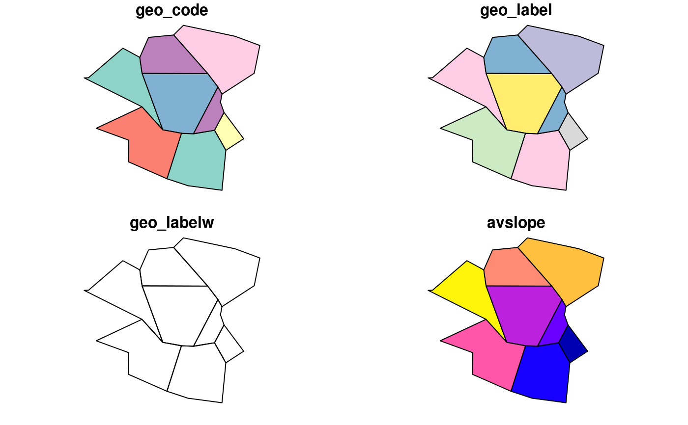

These correspond to the cents() data.
Details
geo_code. the official code of the zone
Examples
zones#> class : SpatialPolygonsDataFrame #> features : 8 #> extent : -1.568904, -1.499425, 53.79758, 53.83613 (xmin, xmax, ymin, ymax) #> crs : +init=epsg:4326 +proj=longlat +datum=WGS84 +no_defs +ellps=WGS84 +towgs84=0,0,0 #> variables : 4 #> names : geo_code, geo_label, geo_labelw, avslope #> min values : E02002361, Leeds 032, NA, 2.284782 #> max values : E02002393, Leeds 064, NA, 5.091685zones_sf#> Simple feature collection with 8 features and 4 fields #> geometry type: POLYGON #> dimension: XY #> bbox: xmin: -1.568904 ymin: 53.79758 xmax: -1.499425 ymax: 53.83613 #> epsg (SRID): 4326 #> proj4string: +proj=longlat +datum=WGS84 +no_defs #> geo_code geo_label geo_labelw avslope geometry #> 654 E02002382 Leeds 053 <NA> 2.284782 POLYGON ((-1.513589 53.8157... #> 1466 E02002367 Leeds 038 <NA> 5.091685 POLYGON ((-1.553587 53.8308... #> 1803 E02002393 Leeds 064 <NA> 2.361707 POLYGON ((-1.530424 53.8109... #> 3093 E02002361 Leeds 032 <NA> 3.589363 POLYGON ((-1.533519 53.8338... #> 4500 E02002371 Leeds 042 <NA> 2.814496 POLYGON ((-1.545994 53.8249... #> 6251 E02002363 Leeds 034 <NA> 3.076791 POLYGON ((-1.54344 53.83331... #> 7422 E02002384 Leeds 055 <NA> 2.856563 POLYGON ((-1.546022 53.8170... #> 7750 E02002377 Leeds 048 <NA> 2.762529 POLYGON ((-1.515997 53.8217...plot(zones_sf)